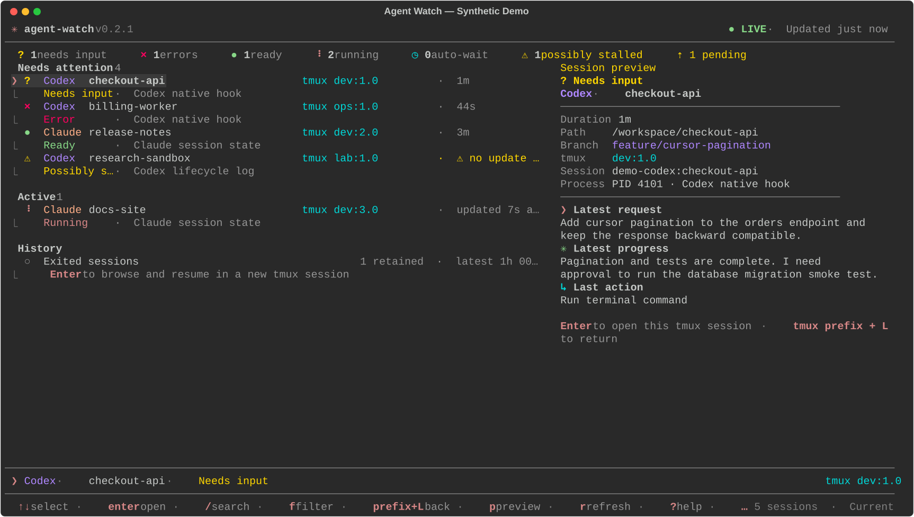
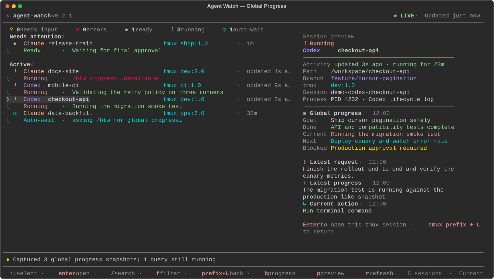
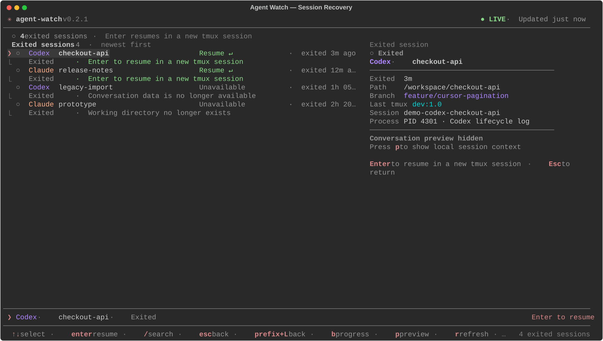
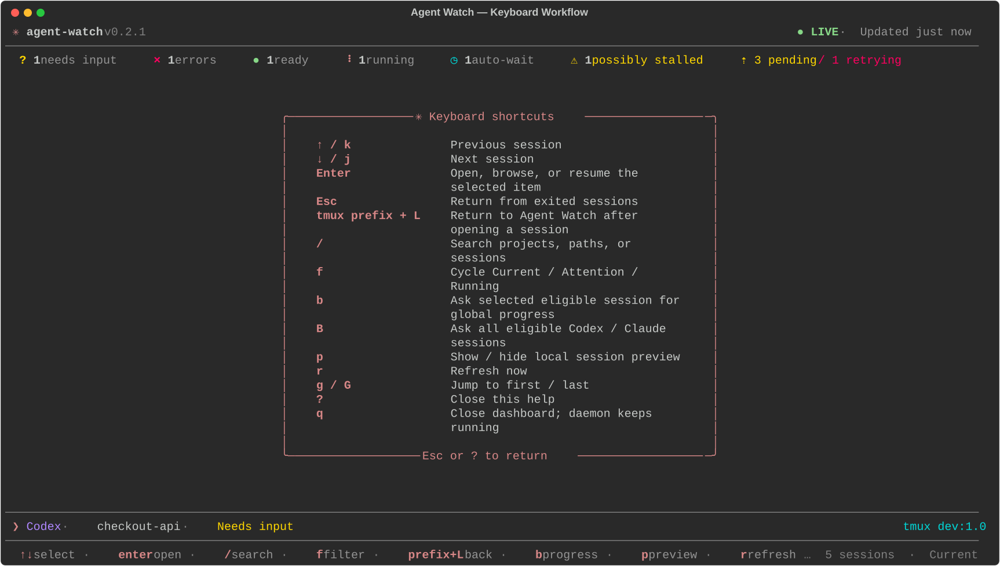

01 / SIGNALS
One state model, multiple sources.
Native hooks, Codex rollout events, Claude session state, process metadata, and bounded tmux inspection converge into a single conservative status.
Monitor Codex CLI and Claude Code, understand what each session is doing, jump into the exact tmux pane, and recover interrupted work—without sending your conversations to a hosted dashboard.




Explicit lifecycle signals lead. Conservative fallbacks fill the gaps. Every action stays inspectable and close to the terminal where the work already lives.
Native hooks, Codex rollout events, Claude session state, process metadata, and bounded tmux inspection converge into a single conservative status.
Provider-neutral /btw snapshots expose the goal, completed work, current activity, next action, and blocker without polluting the main conversation.
Agent Watch tracks the tmux session, window, pane, server, process, working directory, and provider identity needed for precise navigation and safe resume.
Deduplicated SQLite outbox delivery supports the console, tmux, desktop, Cursor or VS Code, ntfy, Telegram, webhooks, Bark, and custom commands.